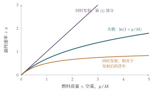

STEP III 2017，第 11 题
继续之前，请先阅读题目（原题为英文）。题目载于 STEP Support Programme 的题目资料库： step.maths.org/questions/17-s3-q11
引子
太空中的火箭没有任何东西可以借力。它靠把质量向后抛出而前进，其余的就交给动量守恒（conservation of momentum）。一辆从车尾开炮的货车，就是一枚拆成一块块的火箭：每枚抛射体（projectile）都是一团喷出的废气。
那么，这些炮应该同时发射，还是逐一发射？这道题给出了明确的答案，但要看清楚它比较的是甚么。同时发射会令货车得到较大的速率，但也消耗较多能量，所以在两种情况下，这些炮所做的并不是同一件事。只要改变保持不变的量，答案就会逆转。把这一点弄清楚，便会引出太空飞行中最重要的方程——齐奥尔科夫斯基（Tsiolkovsky）的火箭方程（rocket equation），也会明白为甚么真正的火箭要分成多级。
动笔之前
某一门炮发射之前，货车以 \(V\) 行驶。发射之后，抛射体的速度是 \(V - v\)（即以速率 \(v - V\) 向后运动）。抛射体相对于发射前的货车的速度是多少？
答案是 \((V - v) - V = -v\)。所以每门炮都以速率 \(v\) 把抛射体向后抛出，这个速率是相对于货车在发射前一刻的速度而言的。这就是本题的固定规则；请牢记它，因为答案正是由它决定的。
逐步解题
阶段 1 同时发射
系统最初静止，动量为零。发射之后，货车（质量为 \(M\)）以 \(u\) 向前运动，而 \(n\) 枚抛射体则以速率 \(v\) 向后运动（因为发射前 \(V = 0\)）。所以 \[Mu - nmv = 0, \qquad u = \frac{nmv}{M}.\] 所获得的动能（kinetic energy）为 \[K = \tfrac12Mu^2 + \tfrac12nmv^2 = \tfrac12\frac{n^2m^2v^2}{M} + \tfrac12nmv^2 = \tfrac12nmv^2\Bigl(1 + \frac{nm}{M}\Bigr). \qed\]
阶段 2 逐一发射
在第 \(r\) 门炮发射前的一刻，货车连同余下的抛射体的质量是多少？速率又是多少？写出第 \(r\) 次发射的动量守恒式。
第 \(r\) 次发射之前，货车载有 \(n - r + 1\) 枚抛射体，所以它的质量是 \(M + (n - r + 1)m\)，速率是 \(u_{r-1}\)。发射之后，载有 \(n - r\) 枚抛射体的货车速率为 \(u_r\)，而射出的抛射体速度为 \(u_{r-1} - v\)。动量守恒： \[\bigl(M + (n - r + 1)m\bigr)u_{r-1} = \bigl(M + (n - r)m\bigr)u_r + m(u_{r-1} - v).\] 把含 \(mu_{r-1}\) 的项整理后，得 \(\bigl(M + (n - r)m\bigr)(u_r - u_{r-1}) = mv\)，这就是 \((*)\)。■
把各个增量相加， \[u_n = \sum_{r=1}^{n}\frac{mv}{M + (n - r)m} = \frac{mv}{M} + \frac{mv}{M + m} + \cdots + \frac{mv}{M + (n - 1)m}.\] 第一项之后的每一项都小于 \(\frac{mv}{M}\)，而且 \(n > 1\)，所以 \(u_n < \frac{nmv}{M} = u\)。■
为甚么在这里逐一发射的效果较差？第一门炮发射时，它要加速的不只是货车，还有那 \(n - 1\) 枚未发射的抛射体，所以它带来的速率增幅，比起作用在空车上时要小。
阶段 3 能量的帐单
写出第 \(r\) 次发射时动能的变化。\((*)\) 怎样帮助你化简含 \(u_r^2 - u_{r-1}^2\) 的那一项？
动能的变化为 \[K_r - K_{r-1} = \tfrac12\bigl(M + (n - r)m\bigr)u_r^2 + \tfrac12m(u_{r-1} - v)^2 - \tfrac12\bigl(M + (n - r + 1)m\bigr)u_{r-1}^2.\] 最后两项合并成 \(\frac12m(v^2 - 2vu_{r-1}) - \frac12\bigl(M + (n - r)m\bigr)u_{r-1}^2\)。然后，把平方差因式分解，并利用 \((*)\)， \[\tfrac12\bigl(M + (n - r)m\bigr)(u_r^2 - u_{r-1}^2) = \tfrac12mv(u_r + u_{r-1}).\] 所以 \[K_r - K_{r-1} = \tfrac12mv(u_r + u_{r-1}) + \tfrac12mv^2 - mvu_{r-1} = \tfrac12mv^2 + \tfrac12mv(u_r - u_{r-1}). \qed\] 由 \(r = 1\) 加到 \(n\)，增量 \(u_r - u_{r-1}\) 逐项相消（telescope），余下 \(u_n\)： \[K_n = \tfrac12nmv^2 + \tfrac12mvu_n. \qed\] 最后，\(K = \frac12nmv^2 + \frac12nmv^2\cdot\frac{nm}{M} = \frac12nmv^2 + \frac12mvu\)，而 \(u_n < u\)，所以 \(K_n < K\)。■
回顾
每一步都用动量。每次发射都是一个小型的二体问题：一边是货车连同所载的东西，另一边是一枚抛射体。
裂项求和。\((*)\) 的增量和能量的增量都能干净利落地加起来。
仔细阅读结论。同时发射得到较大的速率，但要付出较多能量。题目比较的是两个做功多少并不相同的过程。
背后的数学
应该让甚么保持不变？
真正的炮或火箭引擎，是以相对于自身的固定速率抛出抛射体的，而这个速率是在抛射体刚离开之后量度的。本题的参照对象却是货车在发射之前的速率。对一枚细小的抛射体来说，两者相差极微；但当 \(n\) 枚抛射体同时发射时，差别就很大：在第 (i) 部分，一大批沉重的抛射体以速率 \(v\) 被向后抛出，仿佛货车完全没有后座（recoil）一样，这需要大量能量。
假如改为每枚抛射体都以相对于发射之后的货车的速率 \(v\) 离开，结论就会逆转。同时发射得 \(u = \frac{nmv}{M + nm}\)；逐一发射得 \(u_n = \sum_{k=1}^{n}\frac{mv}{M + km}\)，后者较大，因为每一项都至少是 \(\frac{mv}{M + nm}\)。这时逐一发射胜出：每枚抛射体都是从一辆已在运动的货车上蹬出去的，而且越后发射的炮，要加速的质量越少。（请在练习中验证这一点。）
火箭方程
现在让抛射体变得极小而数目极多，并保持总质量 \(\mu = nm\) 不变：这就是一枚连续燃烧燃料的火箭。\(u_n\) 的和变成一个积分（两种约定给出相同的极限）： \[u_n = \sum_{k=0}^{n-1}\frac{mv}{M + km} \;\to\; \int_0^{\mu}\frac{v\,\mathrm{d}s}{M + s} = v\ln\frac{M + \mu}{M}.\] 这就是齐奥尔科夫斯基火箭方程：若火箭喷出的废气以相对于火箭的速率 \(v\) 离开，火箭所增加的速率为 \[\Delta u = v\ln\frac{m_{\text{初}}}{m_{\text{末}}}.\] 图 10.3.1 比较了这三个答案。麻烦就出在对数（logarithm）上：若排气速率约为 \(4.5\) km/s（优良的化学燃料），要达到约 \(7.8\) km/s 的轨道速率，质量比必须是 \(e^{7.8/4.5} \approx 5.7\)；一旦把空气阻力和重力计算在内，这个比值更接近 \(10\) 或以上。火箭几乎全是燃料。

为甚么火箭要分级
对数也解释了分级（staging）的道理。火箭若在升空途中抛掉用完的燃料箱，就不必再加速这些无用的质量。各级所得的速率增量是相加的（就像那些炮一样），而每一级的增量则取决于该级质量的比，所以把火箭分成多级，就能达到总质量相同的单级火箭无法达到的速率。把太空人送上月球的土星五号（Saturn V）有三级；它的第一级在不足三分钟内烧掉约 \(2000\) 公吨燃料。
康斯坦丁．齐奥尔科夫斯基（Konstantin Tsiolkovsky）是俄罗斯外省小城卡卢加（Kaluga）一位失聪的教师，他在 1903 年一篇题为“利用反作用装置探索外太空”的论文中发表了火箭方程。多级火箭、液态氢和液态氧燃料，以及太空站，他都一一推算过，比这些东西真正造得出来早了数十年。这条方程其实更早就在一些较不起眼的地方出现过（William Moore 在 1810 年已推导出其中一个版本），但齐奥尔科夫斯基是第一个看出它对太空飞行意味着甚么的人。他写道：“地球是人类的摇篮，但人不能永远活在摇篮里。”
思维技巧
连续的过程，往往可以理解为许多细小离散步骤的极限（limit）。先把离散的问题精确地解出来，再让步长缩小：和就变成积分。
在这里，\(n\) 门炮变成了一枚火箭，一个和变成了一个对数。到了大学，每逢推导物理定律，你都会见到同一手法：先分析一个微小的单元，再把结果加起来，成为一个积分或一条微分方程（differential equation）。
延伸练习
另一种约定。假设每枚抛射体都以相对于发射之后的货车的速率 \(v\) 离开，重做第 (i) 和第 (ii) 部分。证明这时逐一发射所得的最终速率较大。
尘埃云中的彗星。试做 STEP III 2009，第 11 题。它和火箭一样是变质量（variable mass）问题，但彗星的质量是增加而不是减少。留意它的速率趋向甚么值。
两级火箭。一枚火箭的排气速率为 \(v\)，空重为 \(M\)，燃料质量为 \(9M\)。求它的最终速率。现在把它分成两级，每级的空重为 \(\frac12M\)，燃料为 \(4.5M\)，第一级在燃料用尽后抛掉。比较两个最终速率。
不等式。在 \([0, x]\) 上把 \(\frac{1}{1 + s}\) 分别与 \(1\) 和 \(\frac{1}{1 + x}\) 比较，从而证明当 \(x \geq 0\) 时，\(\frac{x}{1 + x} \leq \ln(1 + x) \leq x\)。
延伸阅读
Daniel Kleppner & Robert Kolenkow, An Introduction to Mechanics（Cambridge University Press），第 4 章。动量、变质量和火箭方程。
George Sutton & Oscar Biblarz, Rocket Propulsion Elements（Wiley）。工程学上的标准教科书；读完本节后，开首几章已可读懂。
Hermann Oberth, Ways to Spaceflight（NASA 译本，可在网上免费阅读）。一位先驱的亲身记述。